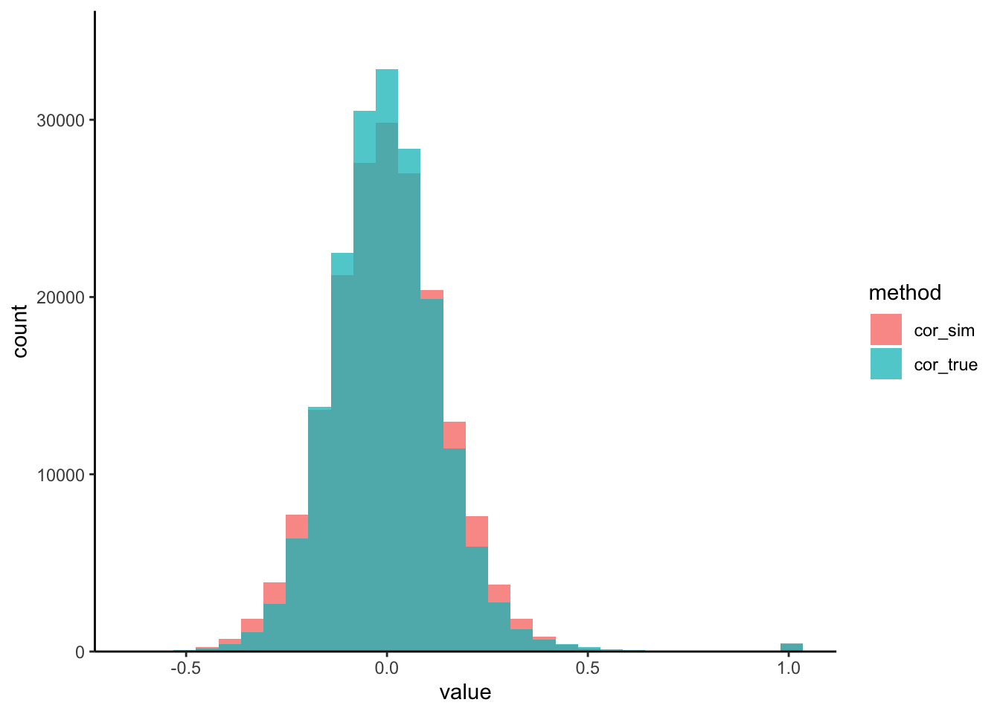

3.3 Evaluation
Last time, we saw how we could visualize marginal simulator quality. How can we tell whether a joint simulator is working, though? One simple check is to analyze the pairwise correlations. Since the copula model is designed to capture second-order moments, it should at the very least effectively capture the correlations.
We’ve written a small helper that visualizes the pairwise protein-protein correlations from both the real and the simulated datasets. We seem to be often overestimating the correlation strength. This is likely a consequence of the high-dimensionality of the problem.

Exercise: To address this, let’s try modifying the copula_def argument of
setup_simulator to use a more suitable simulator. Generate new correlation
histograms and comment on the changes you observe. You only need to modify the
commented lines (#) lines in the block below.
simulator <- setup_simulator(
t1d,
link_formula = ~outcome2,
family = ~ GaussianLSS(),
copula_def = # fill this code in
) |>
estimate(mstop = 100)
sim_exper <- sample(simulator) # and then run these two lines
correlation_hist(t1d, sim_exper) #Solution: For our coupla, we can use a covariance estimator of Cai and Liu
(2011), that is
suited for high dimensions. Larger values of thr will increase the stability
of our estimates, but at the cost of potentially missing or weakening true
correlations. In line with this point, our new simulated correlations are more
concentrated.
simulator <- setup_simulator(
t1d,
link_formula = ~outcome2,
family = ~ GaussianLSS(),
copula_def = copula_adaptive(thr = 0.1)
) |>
estimate(mstop = 100)
sim_exper <- sample(simulator)
correlation_hist(t1d, sim_exper) :::

rhos <- list(sim = cor(t(assay(sim_exper))), real = cor(t(assay(t1d))))
diag(rhos[[1]]) <- NA
top_cors <- which(abs(rhos[[1]]) > quantile(abs(rhos[[1]]), 0.999, na.rm = TRUE), arr.ind = TRUE)
pairs_data <- list(
real = subset_correlated(assay(t1d), top_cors),
simulated = subset_correlated(assay(sim_exper), top_cors)
) |>
bind_rows(.id = "source")
keep_pairs <- pairs_data |>
dplyr::select(source, pair, correlation) |>
unique() |>
filter(source == "real", correlation > 0.72, correlation < 0.8) |>
pull(pair)
p1 <- pairs_data |>
filter(pair %in% keep_pairs) |>
ggplot() +
geom_point(aes(feature1, feature2, col = source), alpha = 0.5, size = 1) +
scale_color_manual(values = c("#038C8C", "#D93636")) +
guides(color = guide_legend(override.aes = list(alpha = 1, size = 2))) +
labs(title = "A", col = "Source", x = expression("Feature" ~ j), y = expression("Feature" ~ j^"'")) +
facet_wrap(~ reorder(pair, -correlation), ncol = 6, scales = "free") +
theme(
strip.text = element_text(size = 7),
axis.text = element_text(size = 8)
)ft_order <- hclust(dist(assay(t1d)))$order
p2 <- correlation_heatmap(rhos$real, ft_order) +
labs(title = "B Real") +
(correlation_heatmap(rhos$sim, ft_order) +
labs(title = "Simulated") +
theme(legend.position = "none"))
(p1 / p2) +
plot_layout(guides = "collect", heights = c(1.2, 2))
How did we choose this threshold? You can compare the correlations more systematically using this loop:
bivariate_metrics <- \(thr, n_rep = 5) {
# refit the simulator with current threshold
simulator <- setup_simulator(
t1d,
link_formula = ~outcome2,
family = ~ GaussianLSS(),
copula_def = copula_adaptive(thr = thr)
) |>
estimate(mstop = 100)
# compute metrics on five samples
err <- list()
for (i in 1:n_rep) {
sim_exper <- sample(simulator)[rownames(t1d), ]
rhos <- list(sim = cor(t(assay(sim_exper))), real = cor(t(assay(t1d))))
err[[i]] <- data.frame(
frobenius = sqrt(mean((rhos$sim - rhos$real)^2)),
ks = ks.test(rhos$sim, rhos$real)$statistic,
thr = thr
)
}
do.call(rbind, err)
}errors <- seq(.001, 0.2, length.out = 10) |>
map_dfr(bivariate_metrics) |>
pivot_longer(-thr, names_to = "metric")
ggplot(errors) +
geom_point(aes(thr, value)) +
facet_wrap(~metric, scales = "free_y") +
labs(x = "Threshold", y = "Metric Value")